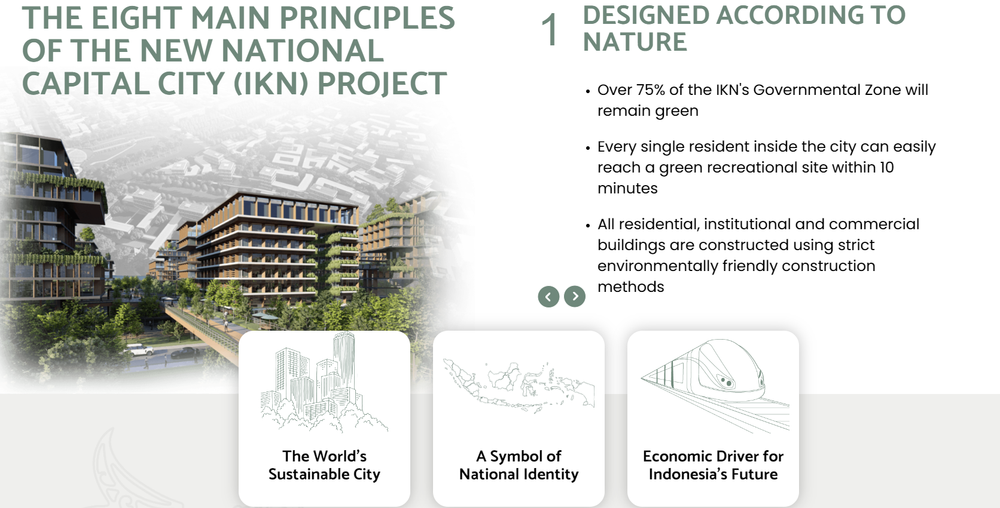
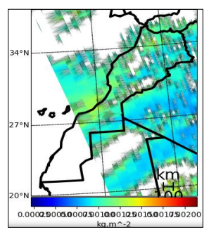
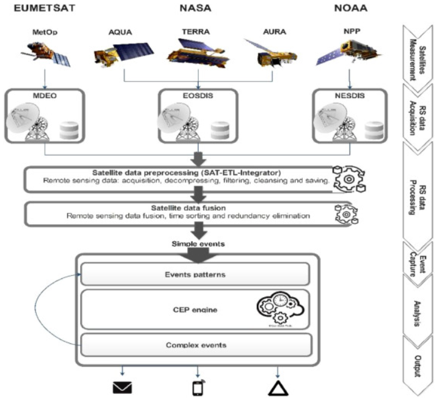

4 Case Study City: Jakarta & Kalimantan
4.1 Summary
There is an initiative to relocate new capital city of Indonesia from Jakarta (Java Island) to Kalimantan. Here’s the official website.
There are eight main principles of the new national capital city (IKN) project. I would like to highlight two of them (“IKN - Ibu Kota Negara” 2021).

IKN project focus in green & sustainable concept and sustanable mobility, it is stated in this source.
Planning for connected green and blue open spaces becomes an important element for the city’s ecological concepts and the conservation of the natural environment of the central government central area (KIPP). KIPP is an urban ecosystem in which nature and the city, as a cultivated environment, are linked and coexist as a community of organisms. This unit is implemented in regional planning and is linked to the green corridor network uninterrupted/green fingers, as well as blue open space, where both help maintain the region’s climate balance. Green and blue open space in KIPP is a regional activity space as well as a corridor of flora and fauna habitat that is divided into two zones: the Natural Forest zone and the Green Open Space Fostered/City Park zone.
For sustainable mobility, it prioritise non-motorized transportation and focus on people-oriented. It planned to cover 80% of transit of public transport. Also 10 minutes city: Coverage Access to public transportation and social facilities in an integrated road corridor in 10 minutes.
The urgency of this migration stems from the rapid expansion of urbanisation. Therefore, Jakarta suffers from heavy traffic and poor air quality. As a result, this policy has ramifications for both Kalimantan as a new capital city and Jakarta.
4.2 Applications
Jakarta was listed as the world’s second most populated capital city (“The World’s 12 Most Populated Capital Cities” 2022). Jakarta’s traffic is congested due to the large number of people. Congestion in traffic pollutes the air. In 2019, Jakarta has the world’s poorest air quality (“Jakarta Air Quality Index (AQI) and Indonesia Air Pollution | IQAir” 2023).
We can utilise remote sensing data to support the initiative from the government. To achieve greener city both in Jakarta and Kalimantan we can monitor air quality.
Study case from Morocco in using satellites data in monitoring air pollution. In this study, they used the EUMETCast service to create a remote sensing system based on data from polar satellites (MetOp) and geostationary satellites (Meteosat). A Java-based application was used to collect and process data. Using Python libraries, an interactive map of Morocco was designed and developed, displaying real-time values of environmental and pollution datasets. The application implemented displays various industrial activity locations as well as related densities of emitted gases. The application could collect and process data in real and near-real time, as well as display results in figures and specific charts. The emissions from these areas, as depicted on the map, may have an impact on neighbouring zones, which include cities and villages. These findings could help policymakers find appropriate solutions to potential pollution-related problems (Boudriki Semlali, El Amrani, and Denys 2019).

SAT-CEP-monitor uses complex event processing and satellite remote sensing to monitor air quality. CEP technology integrates batch and streaming processing to enable NRT satellite sensor data processing. Thus, we can obtain satellite data from areas of interest and provide valuable and user-friendly information on important pollutants. Even without MGS, we can obtain and visualise air quality data from anywhere on Earth in under 40 minutes (“SAT-CEP-Monitor: An Air Quality Monitoring Software Architecture Combining Complex Event Processing with Satellite Remote Sensing” 2021).
After downloading satellite sensor data, the proposed solution calculates over 150 000 input rows in 17 seconds using 4 Gb of RAM and 5 Mb of storage space. Thus, this software is novel in helping solve RSBD streaming processing problems.

4.3 Reflection
This week’s material piques my interest. We learned about the policies and how remote sensing and satellite data can be used to help the city. I can think of some policies and regulations from my city and country in Indonesia based on the materials. I believe that using earth observation data will be extremely beneficial and effective in supporting certain government initiatives. In my case, I considered Jakarta and Kalimantan’s new capital city, which touched on a variety of issues such as the environment, space, mobility, and many others. If we consider incorporating EO data into the regulation, it will be beneficial to the project. Thanks to Andy for providing the materials.